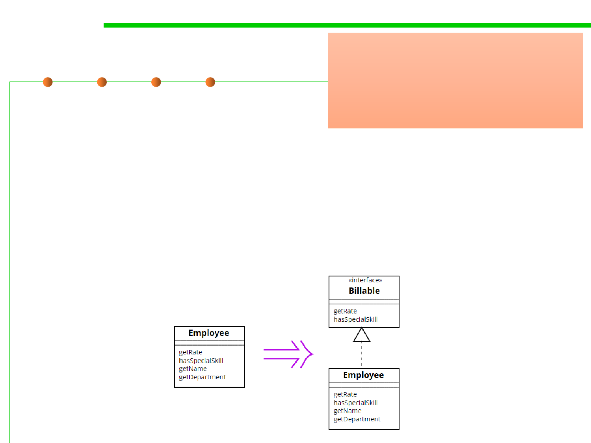

9.2 Refactoring Techniques and Tool Support
Extract Interface
▪ Extract an interface from a class.
Several clients use the same subset
of a class's interface, or two classes
have part of their interfaces in
common.
Extract the subset into an interface.
▪ Some clients may need to know
a Customer’s name, while others may only need to know that
certain objects can be serialized to XML.
▪ Having toXml() as part of the Customer interface breaks the
Interface Segregation design principle which tells us that it’s better
to have more specialized interfaces than to have one multi-purpose
interface.